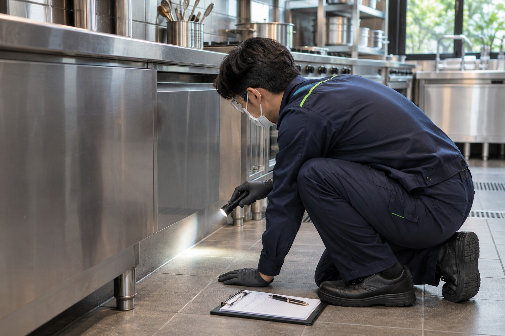
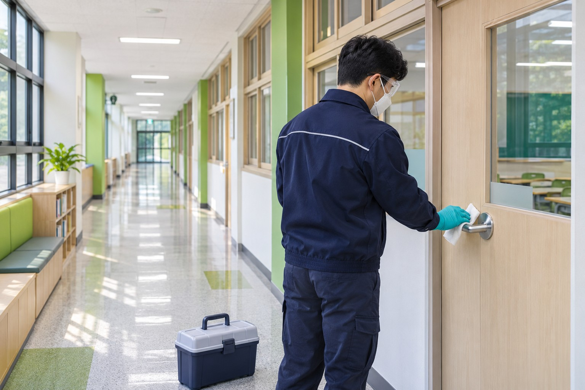

상담 및 일정 협의
공간 유형과 불편 사항을 확인하고 방문 일정을 협의합니다.
처음 상담부터 관리 방향 안내까지
어렵지 않게 설명해 드립니다.
공간 유형과 불편 사항을 확인하고 방문 일정을 협의합니다.
해충 발생 흔적과 유입 경로, 공간의 특성을 살펴봅니다.
현장 상황에 맞는 작업 범위와 관리 방식, 견적을 안내합니다.
협의한 계획에 따라 작업하고 이후 관리 방법을 설명합니다.
주방의 작은 틈부터 여러 사람이 닿는 곳까지.
관리 과정을 표현한 AI 연출 이미지입니다.

설비 하부와 벽·바닥의 틈 등 해충 흔적이 생기기 쉬운 지점을 살피는 과정을 표현했습니다.

문손잡이 등 손이 자주 닿는 표면을 관리하는 장면입니다. 작업 방법은 현장에 따라 달라집니다.